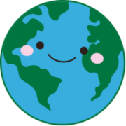
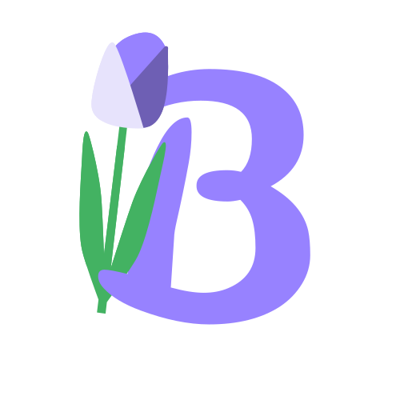
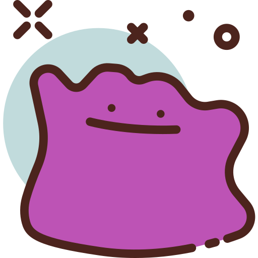

-

Vexillologists.comA place to learn flags, explore the world, and play fun, easygoing daily challenges ⛳️ -

BloomMatesPeople's Choice Award at Ole Cup 2025; A mental health and social connections app centered around giving flowers 🌸 -
IsmiAn Arabic learning app built around practical conversations, courses, and a 15-minute daily study plan 🗣️
-
ML: Predicting IntentShowcasing the process of creating a model to predict whether an online shopper will buy something based on their actions 💻
-
omnom AIAn AI-assisted food diary that turns natural-language or voice meal descriptions into macro tracking with exportable data 🍽️
-
EkklesiaA study companion for those who enjoy the pomodoro technique ☑️
-
🌨️Nuclear WinterA remake of Nuclear Wasteland as a top-down pixel-art RPG ☢️
-
🐳Docker HarborA hands-on, gamified guide to running apps in containers 🐳
-

ML: Predicting Pokemon TypesPredicts a Pokémon's type from its personal stats and other various traits 🐯 -
🏺The Odyssey: VisualizedA visual storyboard of Homer's Odyssey, with artwork and an essay all made by me (made before Christopher Nolan's rendition!) 😉
-
🏀Roster Management SystemOne of my first coding projects; run an NBA front office, build a roster and see how the season plays out ⛹️
-
🌍Data Analysis of Food SecurityA look at how politics and daily life relate to food security across Africa 🥙
-
☢️Nuclear WastelandAn (unfinished) action RPG where the choices you make change the story 🛤️
-
 Predicting Computer PricesA small look into predicting what a 1990s computer would have cost from its specs 💾
Predicting Computer PricesA small look into predicting what a 1990s computer would have cost from its specs 💾